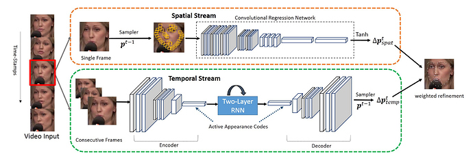
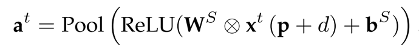
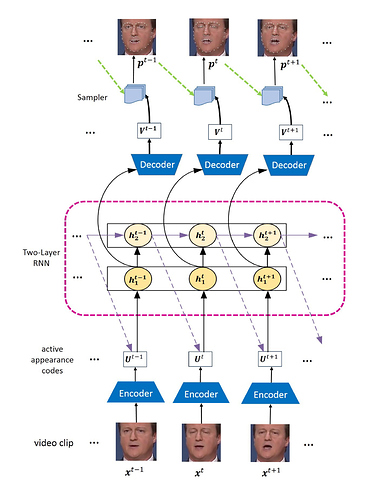
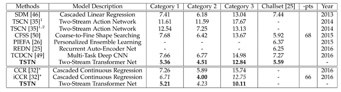

Two-Stream Transformer Networks for Video-based Face Alignment
条评论URL: https://ieeexplore.ieee.org/document/7999169
这是一篇TPAMI2018的论文，论文主要的研究内容是视频场景下的facial landmark 定位的问题。论文的motivation也比较直观，和之前看过的RED-Net很类似，就是想借助于视频流提供的temporal信息再加上静态图片的spatial信息来优化视频场景下的facial landmark问题，比如pose、遮挡等。
下面这幅图是论文中给出的整个框架的示意图，画的比较直观论文中所谓的Two-Stream就是Spatial stream 和 Temporal stream这两个branch，两个分支的输出最后通过不同的权重整合到一起作为最后的输出：

- Spatial Stream: 这个分支通常是和一般的静态图片处理方式是一致的，论文中所提方法分为两个部分，sampler和regression， sampler是从原图中进行采样local patch的过程，local path就是每个landmark点周围的dxd的区域，论文中取d=26。regression则是一个标准的CNN网络，接受local patch为输入回归具体的landmark坐标（实际上回归的是offset），为了达到比较高的精度论文在实际做的时候其实做了两阶段的cascade：
 - Temporal Stream:这一个分支通常是视频场景下facial landmark定位特有的处理过程, 为了对视频的时序信息进行处理，不少的论文都是采用RNN模型来进行处理，本文也不例外，temporal stream分支的输入是一段连续的帧，这些帧首先会经过encoder进行处理提取图片的一些context的信息，然后会根据时序依次输入到两层RNN中，第一层RNN layer通常来编码一些整体的特征信息，第二层RNN layer则用来编码一些变化的时序信息例如pose等，最后RNN的输出会经过decoder映射回输入的size保持原有的spatial 信息然后再经过比较小的回归网络得到最后的landmark输出：

论文主要在300-VM和TF（Talking Face）两个数据集进行了实验，相比较之前的REDN、TCDCN模型都有提升：
300-VW上的表现：

视频场景下的facial landmark定位相比静态图片的facial landmark定位增加了时序信息可以利用，目前的研究所用方法也比较类似，之前看过的REDNet和这篇TSTN都是通过CNN+RNN的逻辑来整合spatial信息和temporal信息，感觉这种信息融合的方法还需要仔细的去研究。